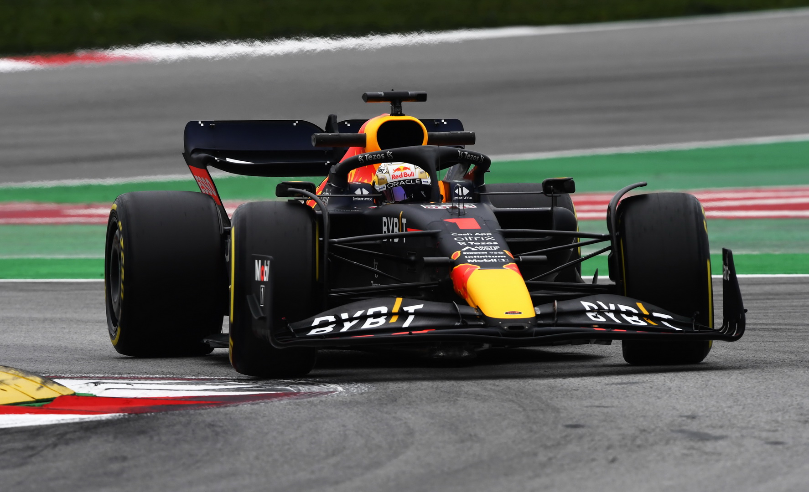

Max Verstappen
Formula 1 World Champion

Max Verstappen driving the RB18, who is currently leading the 2022 Formula One
Wolrd
Championship.
Here's a time line of Max Verstappen's career so far:
- 2014 - Became the youngest person to drive a Formula 1 car after testing for Toro Rosso in 2014 at Suzuka, Japan
- 2015 - Became a full time F1 driver with toro rosso pairing with Carlos Sainz and becoming the youngest driver to start a Formula 1 Grand Prix
- 2016 - Achieved his first F1 victory and becoming the the youngest F1 winner at 18 years old in his first race for Red Bull Racing at Barcelona, Spain
- 2017 - Achieved his 2nd F1 win in Sepang, Malaysia. 6th overall in the F1 Driver standings
- 2018 - Gained 2 more wins in Formula 1 in Austria and Mexico. 4th overall in the F1 Driver standings
- 2019 - Became the fist driver since Ayrston Senna to win in a Honda Powered Machine and achieved 3rd in the Driver standings
- 2020 - Achieved only 1 win in Silverstone in F1' 70th Anniversarry Grand Prix
- 2021 - 2021 Formula 1 World Drivers Champion beating Sir Lewis Hamilton in a last race finale in Abu Dhabi
- 2022 - Currenly leading the F1 drivers championship while fighting with Charles Leclerc and Sergio Perez for the title